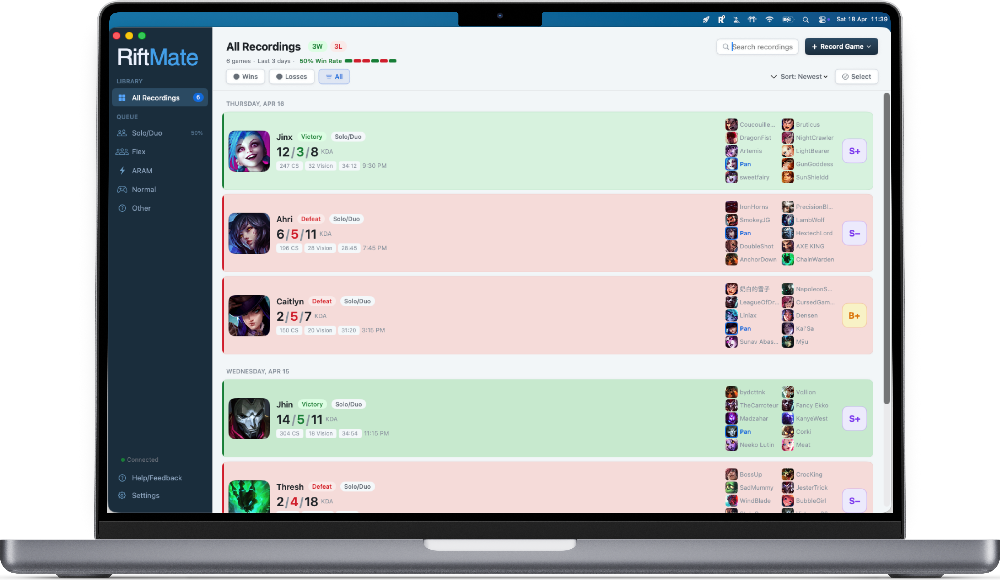

01
Record automatically.
RiftMate detects when your game starts and records the whole thing. Stops when the game ends. No hotkeys, no OBS, no fiddling with bit-rates.
RiftMate automatically records your League of Legends matches on Mac and builds a timeline of every kill, death, and objective — so you can jump to any moment in seconds.
RiftMate detects when your game starts and records the whole thing. Stops when the game ends. No hotkeys, no OBS, no fiddling with bit-rates.
Every kill, death, dragon, baron, herald, turret and inhibitor lives on a synced timeline. Click an event — the video is already there.
Filter the timeline to only show deaths. Spot the pattern — bad wards, overstaying, getting caught. Understand why you lost, not just that you did.
Built for League players who want to get better, not waste time.
RiftMate detects when your match begins and captures it automatically. Pick which queues to record — Solo/Duo, Flex, ARAM, Normals — and forget about it.
Kills, deaths, dragons, barons, turrets — all on a synced timeline next to the video. Click any event to jump straight to that moment.
Press a key mid-game to tag a moment. Review your bookmarks later without scrubbing through the whole replay.
Filter the timeline to only show deaths. The fastest way to figure out what's going wrong in your games.
Every game organized by date. Champions, KDA, result, and duration at a glance. Search and filter by queue or outcome.
No accounts. No uploads. No cloud. Your replays are recorded locally, stored locally, reviewed locally.
Download RiftMate and turn every loss into a lesson.
Download on the Mac App StoremacOS 13 Ventura or later · Apple Silicon & Intel
